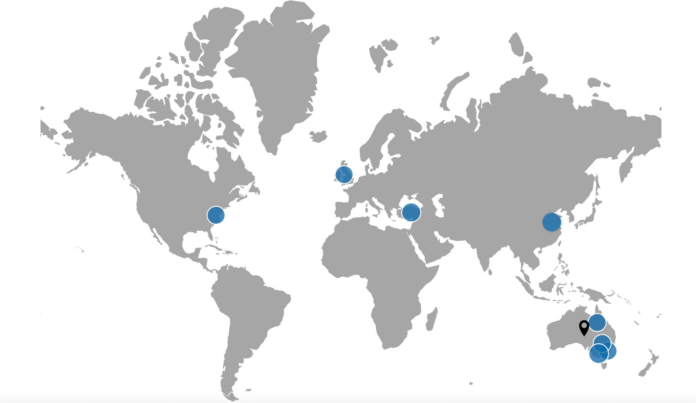

Zarina Vakhitova
Senior Research Fellow
Melbourne, Australia
What's New
What I study
My research sits at the intersection of criminology, cybersecurity, and policing, and I am interested in how new technologies create — and sometimes close — opportunities for crime. Much of my work involves online harms: who becomes a target, who intervenes, what victims do to protect themselves, and how the design of platforms and policies shapes all of this. I've written extensively on cyber abuse and guardianship, online routine activities, tourist victimisation, ransomware and cyber-extortion, and the use of body-worn cameras in police responses to domestic and family violence.
Methodologically, I use Bayesian modelling, factorial survey experiments, and bibliometric audits to turn complex social data into policy insight. I am an advocate for transparent, pre-registered, and reproducible research — and, increasingly, for the thoughtful use of AI-assisted workflows and large language models in empirical social science.
My work has been supported by the Australian Research Council — including a Discovery Early Career Researcher Award — alongside grants from the Australian Institute of Criminology, Court Services Victoria, the Queensland Government, and the Australian Department of Infrastructure, Transport, Regional Development, Communications and the Arts. Across ten grants since 2015, this research has attracted close to AUD 1.9 million in funding.
I am Associate Editor of Crime Prevention and Community Safety: An International Journal, and a Fellow of the Higher Education Academy (UK). My paper with Iliadis, Harris, Tyson and Flynn on body-worn cameras and family violence received the Australia and New Zealand Society of Criminology's Outstanding Policing Research prize in 2022.
Before academia
Before my current role at Monash I was Principal Research Officer in the Strategic Intelligence Unit of the Queensland Police Service, and a Research Assistant at Griffith University's School of Criminology and Criminal Justice, where I also completed my PhD. That time in applied policing research continues to shape how I approach fieldwork, collaboration with practitioners, and the translation of criminological evidence into policy.
Where my collaborators are
Much of my research is collaborative and international. Current and recent collaborators are based across Australia, New Zealand, the United Kingdom, Türkiye, China, and the United States.

Connect
I'm always happy to hear from researchers, students, journalists, and practitioners working on cybercrime, online harms, policing technology, or computational criminology.